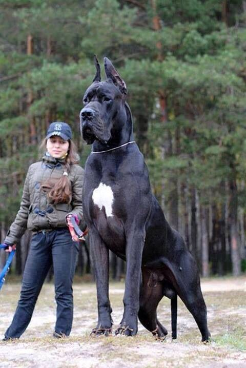
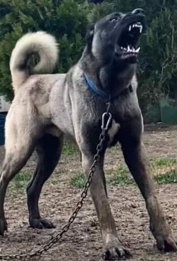

Megdöbbentő méretek: Íme a világ legnagyobb kutyafajtái!
Közzétéve: 2026. augusztus 18.
📢 HIRDETÉS HELYE (Pl. Banner / Native Ad)

Némelyik kutya akkorára nőhet, mint egy kisebb ló. Ebben a cikkben összegyűjtöttük a legimpozánsabb óriásfajtákat...
📢 CIKK KÖZBENI HIRDETÉS
A szakértők szerint ezek a fajták nemcsak hatalmas termetükről, hanem rendkívül barátságos természetükről is ismertek. Bár a tartásuk különleges odafigyelést és nagy teret igényel, a gazdik szerint minden ráfordított energiát megérnek.

📢 CIKK VÉGI HIRDETÉS